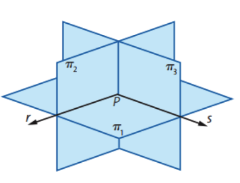
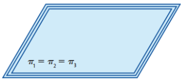
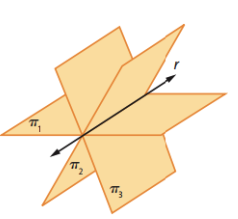
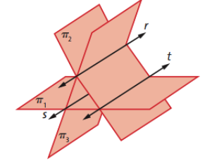

Sistemas Lineares
-
Equações Lineares
-
Tipos de Equações Lineares
- SPI
- SPD
- SI
-
Sistema Linear 2x2
- Método da Adição
- Método da substituição
-
Interpretação Geométrica dos Sistemas Lineares 2x2
-
SPI
Neste caso as retas são coincidentes, ou seja, tem infinitos pontos comuns, infinitos possíveis valores de x e y para tornar verdadeira a igualdade
Ex:
2x + 2y = 6
8x + 8y = 24
-
SPD
Neste caso há somente um único ponto onde as retas se cruzam, e os valores de x e y deste ponto que tornam a igualdade verdadeira
Ex:
4x - 3y = 10
2x + 5y = 14
-
SI
Neste caso as retas nunca se cruzam, logo, não há valor de x e y que torne verdadeira a igualdade
Ex:
2x + 1y = 6
10x + 5y = 24
-
Sistema Linear 3x3
-
Substituição
Consiste em substituir as ingónitas por alguma equação equivalente.
Ex:
x + y + z = 6
2x - y + z = 3
x - y - 2z = -7
Continuando:
x = 6 - y - z
2x - y + z = 3
x - y - 2z = -7
Agora substituimos o x da segunda e da terceira equação:
x = 6 - y - z
2(6 - y - z) - y + z = 3
(6 - y - z) - y - 2z = -7
Continuando:
x = 6 - y - z
12 -2y -2z - y + z = 3
6 - y - z - y - 2z = -7
Continuando:
x = 6 - y - z
12 -3y -1z = 3
6 - 2y - 3z = -7
Agora multiplico por -1 e troco de lado as incógnitas da segunda equação, isolando o "z":
x = 6 - y - z
1z = -3 + 12 -3y
6 - 2y - 3z = -7
Continuando:
x = 6 - y - z
1z = 9 - 3y
6 - 2y - 3z = -7
Agora eu subtituo o z da terceira equação:
x = 6 - y - z
1z = 9 - 3y
6 - 2y - 3(9 - 3y) = -7
Continuando:
x = 6 - y - z
1z = 9 - 3y
6 - 2y - 27 + 9y = -7
Continuando:
x = 6 - y - z
1z = 9 - 3y
-2y + 9y = -7 + 27 -6
Continuando:
x = 6 - y - z
1z = 9 - 3y
7y = 14
Continuando:
x = 6 - y - z
1z = 9 - 3y
y = 14/7
E assim descobrimos o valor de "y":
x = 6 - y - z
1z = 9 - 3y
y = 2
Agora vamos substituir o valor de y na primeira e na segunda equação
x = 6 - (2) - z
1z = 9 - 3(2)
y = 2
Continuando:
x = 6 - 2 - z
z = 9 - 6
y = 2
Assim descobrimos que "z" vale 3:
x = 6 - 2 - z
z = 3
y = 2
Agora subtituimos o valor de "z" na primeira equação:
x = 6 - 2 - (3)
z = 3
y = 2
Assim descobrimos que "x" vale 1:
x = 1
z = 3
y = 2
-
Escalonamento
Consiste em transformar os sistemas em uma matriz e fazer operações entre os sistemas para fazer o coeficiente de determinadas ingónitas ser igual a "0".
Ex:
x + y + z = 6
2x - y + z = 3
x - y - 2z = -7
Primeiro eu transformo isso em uma matriz:
x y z 1 1 1 6 2 -1 1 3 1 -1 -2 -7
Agora eu faço equações, somando duas L1(linha 1), com 1 L2
x y z 1 1 1 6 (2L1 - L2) 2 -1 1 3 (L1 - L3) 1 -1 -2 -7
Continuando:
x y z 1 1 1 6 2(1) - (2) 2(1) - (-1) 2(1) - (1) 2(6) - (3) (1) - (1) (1) - (-1) (1) - (-2) (6) - (-7)
Continuando:
x y z 1 1 1 6 0 3 1 9 0 2 3 13
Agora eu faço 2L2 - 3L3:
x y z 1 1 1 6 0 3 1 9 2(0) - 3(0) 2(3) - 3(2) 2(1) - 3(3) 2(9) - 3(13)
Continuando:
x y z 1 1 1 6 0 3 1 9 0 0 -7 -21
Agora que temos 3 incógnitas zeradas, basta trasnformar a matriz em um sistema 3x3 novamente: x + y + z = 6
3y + z = 9
-7z = -21
Assim descobrimos que -7z = -21
logo, 7z = 21
logo, z = 21/7
logo z = 3
Agora só precisamos aplicar o valor de "z" na priemira e na segunda equação:
x + y + 3 = 6
3y + 3 = 9
Continuando:
x + y = 6 - 3
3y = 9 - 3
Continuando:
x + y = 3
3y = 6
Continuando:
x + y = 3
y = 6/3
Continuando:
x + y = 3
y = 2
Agora só falta colocar o valor de "y" na primeira equação:
x + 2 = 3
x = 1
y = 2
z = 3
-
Interpretação Geométrica dos Sistemas Lineares 3x3
-
Relações entre sistemas lineares e matrizes
-
Uso de determinantes
São equações que envolvem uma ou mais incógnitas, sendo que todas elas estão no expoente 1 e não tem termos mistos do tipo "2xy"
Ex: a1x1 + a2x2 + a3x3 + ... + anxn + b = 0
Sendo que todos os "a" são coeficientes reais, os "x" são as incógnitas e "b" é o termo independente
Solução: é a sequência de números reais, que, quando colocados no lugar das incógnitas, tornam verdadeira a igualdade dada
Elas podem ser SPI(Sistema Possível Intederminado), SPD(Sistema Possível Determinado) ou SI(Sistema Impossível)
São sistemas onde existem muitas (infinitas), formas de tornar a igualdade verdadeira
Ex: a + x = 1
Neste exemplo, o "a" pode ser 1 e o "X" pode ser 0, ou então, o "X"
pode ser 1 e o "a" pode ser 0.
Porém existem alguns casos em que existe uma relação entre as incógnitas para que a igualdaade seja verdadeira, nestes casos podemos dar uma "resposta" para determinar qual será o número de determinada ingonita, a depender de outra ingógnita
Ex: 2x + 1y = 3
Neste exemplo, para todo valor de "X", o y valerá "-2x + 3", escrevemos isso
da seguinte forma: SPI(x, -2x + 3)
São sistemas onde apenas um conjunto de números consegue tornar a igualdade verdadeira
Isso costuma acontecer mais quando tem duas equações lineares.
Ex:
2x + 3y = 19
x - y = -3
Neste exemplo o X precisa ser 2 e o y precisa ser 5,
qualquer outro conjunto falhará em tornar a igualdade verdadeira
Basicamente são sistemas que não tem solução, ou seja, não existe uma forma de deixar a igualdade verdadeira
Ex:
x + 2y = 12
3x + 6y = 0
Confira isso
É um sistema de duas equações lineares e 2 incógnitas
Existem dois métodos principais para resolvermos este tipo de sistema:
Neste método você realiza operações nas equações para depois realizar uma soma entre as duas equações e zerar uma das incógnitas
Ex:
2x + 3y = 19
x - y = -3
Aqui eu irei multiplicar a segunda equação por 3:
2x + 3y = 19
3x - 3y = -9
Agora irei manter a de cima e somar a de cima com a de baixo:
2x + 3y = 19
(3x+2x) - (3y+3y) = (-9+19)
2x + 3y = 19
5x - 0y = 10
Assim podemos concluir que X = 2
Só falta pegarmos essa ingónita e colocar na primeira equação
2(2) + 3y = 19
4 + 3y = 19
3y = 19 - 4
3y = 15
y = 15/3
y=5
Você substitui uma ingógnita por um pedaço de equação
Ex:
2x + 3y = 19
x - y = -3
2x + 3y = 19 x = y -3
Agora vamos substituir o "X" da primeira equação por "y - 3" visto que X vale "y - 3"
2(y -3) + 3y = 19
2y -6 + 3y = 19
5y = 19 + 6
5y = 25
y = 25/5
y = 5
E para descobrir o X, basta colocar o valor de Y em qualquer uma das duas equações:
2x + 3y = 19
2x + 3(5) = 19
É uma forma de representar um sistema linear com um gráfico.
O ponto onde as duas retas se cruzam é o valor de x e y que torna a
igualdade verdadeira
Existem 3 tipos de gráfico, que estão diretamente ligados com o tipo de sistema linear(SPI, SPD e SI)
É um sistema que possui 3 equações lineares e 3 incógnitas.
Assim como em sistemas lineares 2x2, este sistema também pode ser
SPI, SPD ou SI.
Aprendemos em aula dois diferentes métodos para resolver estes sistemas,
o método da substituição e o método do escalonamento.
Existem várias possibilidades de figuras que podem surgir
a partir da representação gráfica de sistemas 3x3, visto
que essas imagens serão 3D.
A depender da forma gerada, podemos saber se é um SPI, SPD
ou um SI
Alguns exemplos tirados do material disponibilizado pela professora:

Esse aqui é SPD, pois existe um ponto onde os três planos se encontram

Esse aqui é SPI, pois existem infinitos pontos onde os três planos se encontram

Esse aqui é SPI também, pois ainda existem infinitos pontos onde os três planos se encontram

Esse aqui é SI, pois não há em momento nenhum um ponto onde os três planos se encontram
Um sistema linear 2x2 ou 3x3 pode ser representado por meio de uma matriz.
Ex:
Sistema:
2x - 3y + z = 10
4x + y - 2z = -4
x + 2y + z = 14
Matriz gerada a partir do sistema:
| x | y | z | |
| 2 | -3 | 1 | 10 |
| 4 | 1 | -2 | -4 |
| 1 | 2 | 1 | 14 |
Usos:
Basicamente isso é usado para facilitar o método do escalonamento
O determinante de uma matriz quadrada incompleta gerada a partir de um sistema 2x2
ou 3x3 pode ser usada para descobrir se o sistema é SPI, SPD ou SI.
Se o determinante for igual a 0, é um SPI ou SI, porém, se o determinante
for diferente de 0, é um SPD.